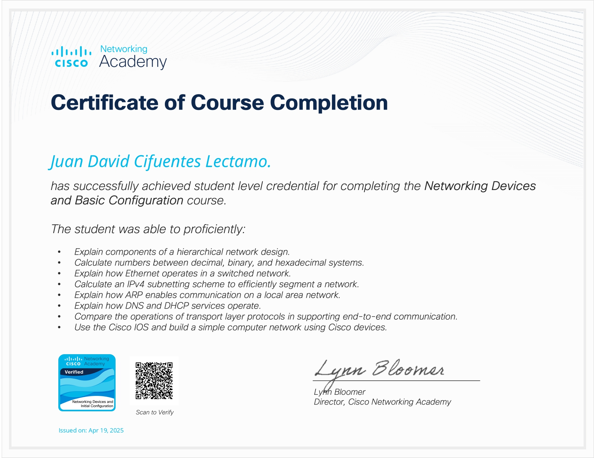

Networking Devices and Basic Configuration - Cisco Networking Academy
Completado en abril del 2025. Este curso de Cisco Networking Academy cubre los principios fundamentales y configuración básica de dispositivos de red, abarcando:
- Conceptos fundamentales de redes y protocolos.
- Dispositivos de red: routers, switches y firewalls.
- Configuración básica y gestión de dispositivos Cisco.
- Introducción a la seguridad y métodos de protección en red.
- Prácticas de laboratorio para configuración y troubleshooting.
Gracias a este curso, adquirí conocimientos prácticos para configurar, gestionar y solucionar problemas en redes empresariales básicas. Y me ha preparado para en el futuro abordar retos más avanzados en redes y administrar infraestructuras de red de manera efectiva.
Certificado Obtenido
